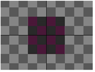

Open topic with navigation
Copying a Rectangle from one Image to Another
With the CopyRectangle node, you can copy a rectangle from one input on top of another.

|

|
| Input A. |
Input B. |

|
| The output of CopyRectangle. |
The CopyRectangle node can also be used to limit effects, such as color corrections, to a small region of an image. To do so, you need to use the same image in both input A and B and only perform the color correction on one input.

|
A rectangle from input A color corrected
and copied on top of input B. |

|

|
The original image before
CopyRectangle. |
Defining a rectangle with
Copy Rectangle. |
|
|
The color corrected rectangle
on top of the original image. |
To Copy a Rectangle from One Image to Another
|
1.
|
Select Merge > CopyRectangle to insert a CopyRectangle node after the image that has a region you want to copy (input A) and the image you want to copy the region to (input B). Create the following setup: |
|
2.
|
In the CopyRectangle controls, use the channels dropdown menu to select the channels you want to copy from input A. |
|
3.
|
To define the rectangle you want to copy, resize and reposition the CopyRectangle overlay in the Viewer. Drag the center of the overlay to reposition, and the edges to resize. If you cannot see the overlay in the Viewer, open the CopyRectangle properties panel and double-click on the Viewer node in the Node Graph. |

|

|
| Repositioning the rectangle. |
Resizing the rectangle. |
|
4.
|
To control how soft the edges of the rectangle seem, adjust the softness slider. The higher the value, the softer the edges. |
|

|

|
| A low softness value. |
A high softness value. |
|
5.
|
To dissolve between the full CopyRectangle effect and input B, adjust the mix slider. |